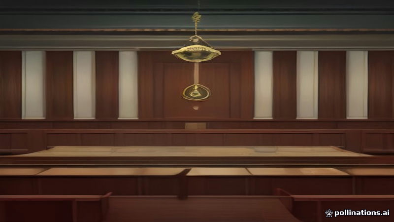

প্যারাগুয়ের প্রাক্তন প্রেসিডেন্ট সান্তিয়াগো পেনা ব্যাংক স্ক্যান্ডালের ফলে বাড়িতে আটক
Al Jazeera English, France 24 · 2026-11-07
AI-generated illustrationসেনেটের ঐক্যমত্যে প্রেসিডেন্ট সান্তিয়াগো পেনা অপসারণ করা হয়, ইউএনও ব্যাংকের পতনে তিন মিলিয়ন গ্রাহকের সঞ্চয় অ্যাক্সেস না পাওয়ার পর বাড়িতে আটক করা হয়, আল জাজিরা ও ফ্রান্স ২৪ রিপোর্ট করেছে
প্যারাগুয়ের প্রাক্তন প্রেসিডেন্ট সান্তিয়াগো পেনা সেনেটের ঐক্যমত্যে অপসারণের পর বাড়িতে আটক হয়েছেন, আল জাজিরা ইংরেজি অনুযায়ী। ইউএনও ব্যাংকের ধসে পড়ার ফলে প্রায় তিন মিলিয়ন গ্রাহক তাদের সঞ্চয় অ্যাক্সেস করতে পারছেন না, ফ্রান্স ২৪ জানিয়েছে। এই ব্যাংক সংকট রাজনৈতিক সঙ্কটের দিকে নিয়ে যায় এবং পেনার পদত্যাগ ঘটায়।
পেনা কোনো ভুল স্বীকার করেননি। তার উত্তরসূরি পেড্রো আলিয়ানা বলছেন সরকার ব্যাংক ব্যর্থতার ফলে ক্ষতিগ্রস্তদের ক্ষতিপূরণ দেওয়ার জন্য কাজ করবে, ফ্রান্স ২৪ উল্লেখ করেছে।
Written by AI from facts reported by the outlets named above. It may contain errors; check the original reporting.English version
Paraguay’s former president Santiago Peña placed under house arrest amid banking scandal
Paraguay’s former president Santiago Peña was impeached and subsequently placed under house arrest after a unanimous Senate vote to remove him, according to Al Jazeera English. The move follows the collapse of Ueno Bank, which left nearly three million customers unable to access their savings, France 24 reported. The banking failure sparked a political crisis that led to Peña’s ouster.
Peña has denied any wrongdoing. His successor, Pedro Alliana, said the government will work to compensate those affected by the bank’s failure, France 24 said.